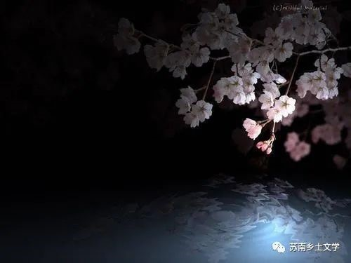
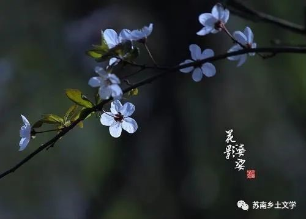

《花影》
叶兆言
父死兄瘫后，妤小姐成了甄家大院的主人，她一心追回已逝的青春，寻求从不曾得到过的自由和欢乐。然而，封建家庭对她身心的毒害难以祛除，父兄的阴影亦时刻将她包围。
最终，她以青春、激情和生命为代价，向黑暗的封建礼教作出了自己的抗争。
新旧交替的时代背景
1.20年代江南小城处于新旧交替的时代
新和旧处于交替的时代，新思想和旧势力都很脆弱，同时也令人难以置信的强大。老年人缅怀着过去的岁月，憧憬着新生活的年轻人都变得不安分起来。“新”作为一种时髦字眼，正不可阻挡地深入人心。
2.新派和老派人物一样的迂腐
因为他发现小城中新派人物的嘴脸，实在要比老派的保守分子更让人讨厌。老派新派一样都喜欢嫖妓，老派的人物喜欢在黄昏的时候出发去妓院过夜，而新派分子呢，却喜欢在大白天，堂而皇之地来找相好的妓女睡觉。
中学校长满脑子迂腐的旧观念，却最喜欢标榜新潮，标榜开明。
3.知识分子新化并不彻底。
小云夸夸其谈，大谈暴力革命，大谈流行的无政府主义。他的演讲语无伦次，说穿了只是一系列时髦口号的堆积。
事实上，他的肚子里并没有多少词汇，他的那些激烈的观点未必就是他自己的。他不过是以批判的态度，对现实的一切进行最强烈的抨击而已。
- 
- 
江南建筑传统
1.江南水乡沿河而建村落的传统。
1840年鸦片战争前后铁路传入中国（西方文明的冲击）
一条大河从小城中间穿过去，在最热闹的街区拐了个弯，一直通往远方的铁路线。
2.苏南地区房屋建设传统：坐南朝北；信奉风水五行。
整个大宅坐南向北，完全符合中国著名的风水家的观点。坐南向北，这说明大宅的创始者，是一巨商。汉《图宅术》中写道：“商家门不宜南向。”又接着说：“商金，南方火也。”火克金为凶，而北方为水，金生水相生相吉，所以大门应朝向为北。
甄家大宅在平面布置上，采取了左右两条轴线为一组的对称形式，以一种典型的南方式的四合院为基础，组成一组组封闭性的穿堂建筑群。在各主轴线上，由北而南，大厅一进接着一进。
3.南方房屋的防潮设计
由于南方气候潮湿，在雨季到来的日子里，小城的人都因为潮湿而到处生霉发愁。在如何防潮这一点上，甄家大宅所采取的办法，便让人拍手叫绝。让人难以置信的，是室内的地面，全部采取方砖平塌，方砖下设置了兰盆或坛子，使地面与地气隔开一段距离。这种设计，不但有效地解决了防潮问题，而且冬暖夏凉。
传统封建大家族的黑暗腐朽
1.大家族的淫乱荒诞
甄氏父子像《金瓶梅》里西门庆一样，过着放纵糜烂的生活，他们服着祖先留下来的春药，使用着不久以后便要失传的淫具，沉浸在最后的欢乐里面。
2.封建时期旧家族的衰弱
甄家正在急剧地走下坡路，虽然金玉其表名声依旧，然而这个昔日辉煌的大宅，显而易见地已经接近了崩溃边缘。甄老爷子是一个没落时代的代表。
3.与苏南葬礼习俗类似，都是用白布把灵柩和大厅隔开。
灵柩前拉起了一块巨大的白布，像帘子似的把灵柩和大厅隔了开来，老爷子的遗像便挂在大白帘布上。
4.传统的祠堂体现家族的姓氏观念和嫡长子继承制度，苏南地区也有很多祠堂。
由于大少爷乃祥已经废了，甄老爷子又没有别的子嗣，按照老派的规矩，甄老爷子唯一的女儿妤小姐作为女人，是不能继承财产的，族里一致决定，要在侄子那一辈中，找一个老实能干的孩子，过继到甄老爷子门下，以便日后能够接管甄家大宅。
感悟
本书记述了20年代的江南小镇的大家族的变革故事，其中许多描写都极具江南气息。正如这句话；“只有空气中，仍然洋溢着淫荡的气息，女人的脂粉气味，仿佛凝固在了南方特有的潮湿气氛之中。许多没人住的老房子正在开始漏雨。”与苏南韵味，别无二致。
书中很多细节都与我们的大创项目相关，例如江南地区的潮湿天气铸就了独特的房屋的防潮设计，还有传统的丧葬习俗也与苏南地区有类似之处。本书的甄氏家族，极为富有，让我想起了苏州富商沈万三，苏南地区也有许多著名富商，他们就曾是南方小城的标志性人物。
1919年发生的五四运动，势必会对江南小城产生极大的影响，本书中新旧交替的时代背景，对于我们研究20年代的苏南地区的乡村也大有裨益，一方面是西方文明的冲击，主人公妤小姐的抗击封建、打破传统的意识，另一方面是封建大家族的守旧。封建大家族制度无法留存，但新派新化仍不彻底，所以江南小城的未来何去何从，是我们应该思考的重要问题，我想，这也能帮助我们思考苏南乡村地区的未来展向。